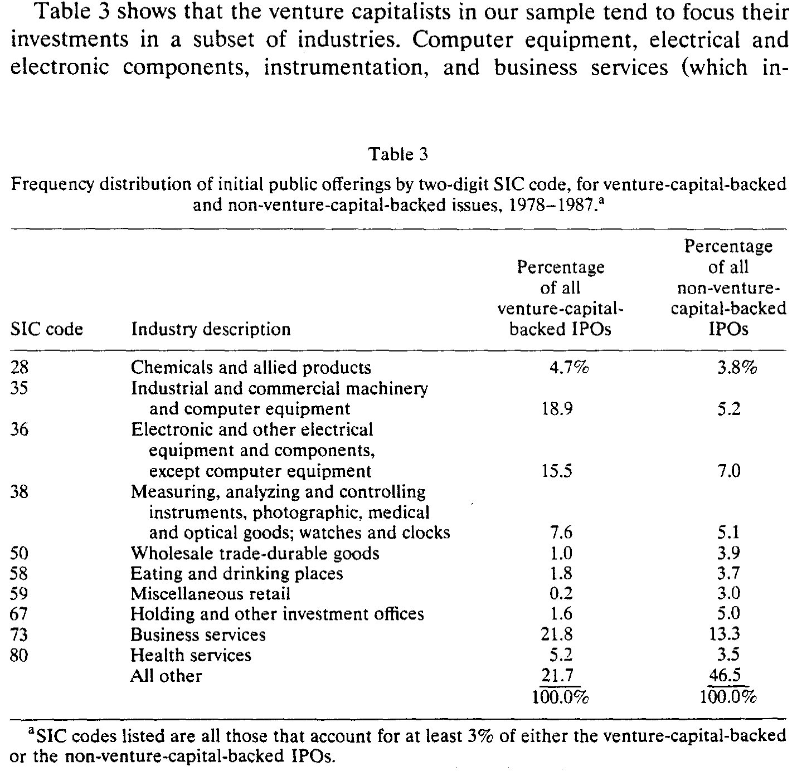
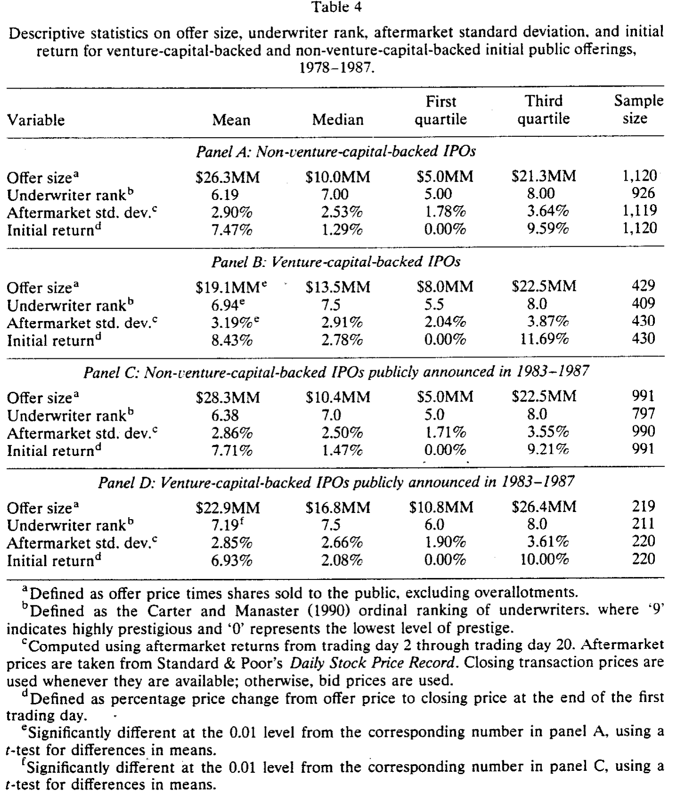
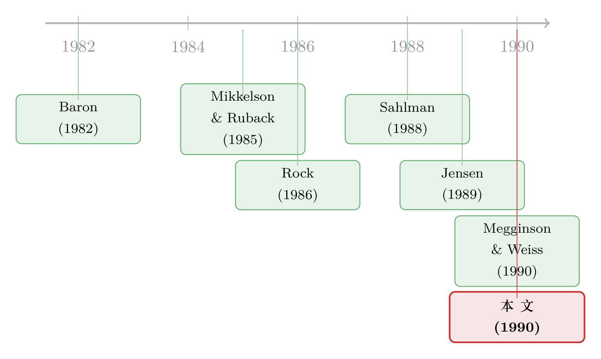

招股书掀开的那道帘子：风险投资家究竟是「监工」还是「大股东」
本文读的是 Barry, Muscarella, Peavy & Vetsuypens (1990, JFE)：他们第一次用一个「应有尽有」的大样本——433 家风投支持的 IPO——给风险投资家画了一张实证肖像。核心发现是，风投家不是被动的有钱人，而是握着集中股权、坐在董事会里、上市后仍不撤资的主动监督者 (active monitor)；而资本市场看得懂这种监督的质量——监督越好的发行，新股「打折」越少。
1 一道掀不开的帘子
先说一个让金融研究者很尴尬的事实：在 1990 年之前，我们几乎不知道风险投资家 (venture capitalist) 到底在干什么。
这不奇怪。风投投的是私人公司——那些还没上市、对公众不可见的初创企业。它们没有财报、没有招股书、没有股价，外人连这家公司存不存在都未必知道，更不用说去观察风投家在里面扮演了什么角色。于是关于风险投资的一切，长期停留在传闻、案例和从业者的自述里。Jensen 和 Warner (1988) 在综述大股东问题时甚至直言：关于大额持股人究竟有没有在「监督」，证据是混杂的 (mixed)。
但风投家身上有一种气质，让公司治理研究者一眼就觉得「眼熟」。他们在投资的公司里拿走集中的股权，对管理层施加实质性的影响——这不正是公司控制权文献里反复讨论的那种主动投资者 (active investor) 吗？Holderness 和 Sheehan (1985, 1988)、Mikkelson 和 Ruback (1985)、Shleifer 和 Vishny (1986) 研究的大额持股人，Jensen (1989) 笔下那些在重组和监督中举足轻重的「积极投资者」——风投家看起来就是其中的一员。
更妙的是，风投家和杠杆收购 (leveraged buyout, LBO) 专家像极了。两者都是又出钱、又监督的人。Kaplan (1989)、Muscarella 和 Vetsuypens (1990)、Smith (1990) 已经证明，LBO 专家能让转为私有的公司业绩大幅改善。区别只在于投资对象：LBO 玩家盯的是现金流可预测的成熟公司，而风投家盯的是年轻、高风险的创业项目。所以风险投资市场，恰好是研究「集中持股的主动投资者」的另一块试验田。
可问题还是那道帘子——私人公司，看不见。
接着，一个自然的问题是：有没有哪一个时刻，这道帘子会被掀开？
有。那就是公司上市的那一刻。 当一家风投支持的公司去做首次公开发行 (initial public offering, IPO) 时，它必须递交招股书；而招股书里清清楚楚地写明了风投投资者的身份、他们的持股、以及他们在公司里的活动细节。这是外人第一次、也是唯一一次能系统地看见风投家的机会。本文做的，就是抓住这唯一的窗口，把帘子后面的人看个清楚。
2 数据：一个「应有尽有」的样本
这篇论文的野心，写在它对样本的描述里——exhaustive，应有尽有。
作者从 Venture Economics 公司出版的《Venture Capital Journal》里，拿到了 1978–1987 年间被报告为风投支持的 539 家 IPO。逐一核对招股书的「Management」与「Principal and Selling Shareholders」两节，再和《Pratt's Guide to Venture Capital Sources》交叉比对，剔除了拿不到招股书、有限合伙份额发行、反向 LBO、以及招股书里根本找不到风投股东的情形，最后剩下 433 家风投支持的 IPO。作为对照，他们另外收集了 1,123 家没有风投背景的 IPO。
这个样本有多大分量？这 433 家公司在 1978–1987 这十年里总共募集了 8.2 亿美元……不，是 82 亿美元（$8.2 billion），上市后所有股份的总市值超过 360 亿美元。在本研究覆盖的 IPO 里，风投支持的占了约 28%；即便拿 Ibbotson、Sindelar 和 Ritter (1988) 那份号称最全的 4,494 家 IPO 清单来比，风投支持的也占了约 10%，而且这个比例十年间相当稳定。
顺带一提，作者也替这个行业留下了一组令人印象深刻的「成长快照」：独立风投家的新增资本承诺，从 1978 年的 2.18 亿美元，飙到 1987 年的 41.8 亿美元；管理的资本总额，从 1977 年 211 家风投管的 25 亿美元，涨到 1988 年底 658 家风投管的 310 亿美元。八十年代，是属于风险投资的十年。
3 帘子后面的人长什么样
掀开帘子，第一眼看到的是：风投家是一群「抱团」的、专一的、深度参与的人。
他们抱团。 这 433 家公司背后站着 424 位风投家，其中 349 位（82%）是独立风投（而非银行、企业、投行的风投子公司）。但更关键的数字是：这些公司总共接受了 1,264 笔独立的风投投资——平均每家公司约 3 位风投家。这和 LBO 专家形成鲜明对比：LBO 玩家几乎从不和别的买断基金分享一家公司的股权或董事席位。为什么风投要抱团？一方面是大多数风投的资金盘子不大，需要联合才能凑够一家公司的资金；另一方面——也是更有意思的一面——多一个风投，就多一双盯着公司的眼睛，主导的风投可以借此获得对项目前景的独立评估。监督，从一开始就是这群人的关键词。
他们专一。 如表 3 所示，风投家把投资高度集中在少数几个行业：计算机设备、电子元器件、仪器仪表、商业服务（含计算机软件），这四类加起来占了风投支持 IPO 的 63.8%，而在其他 IPO 里只占 30.6%。在《Pratt's Guide》里，许多风投甚至明确写出自己「偏好」和「绝不考虑」的行业。专一带来专长——而专长，正是监督一家技术型创业公司所必需的。

Table 3: shows that the venture capitalists in our sample tend to focus their
他们持股集中、参与治理、上市后还赖着不走。 主导风投在 IPO 时平均持有 19% 的股权，全体风投合计平均持有 34% 的流通股；他们占据了约三分之一的董事席位，并且在公司上市之前，已经陪伴这些公司走过了大约一半的企业生命。这不是「买一张票坐等分红」的财务投资者，这是把手伸进公司治理里的人。
一个细节值得停下来想想：风投家在 IPO 之后并不急于套现。按 Sahlman (1990) 对风投契约的刻画，风投愿意通过维持上市后的股权头寸，把自己绑定在新发行的价值上。换句话说，他们用「不立刻走」这件事，向市场发出了一个昂贵的信号。（关于上市那一刻风投与创始人如何用「锁定期」自缚双手，可参见《上市这天终于能套现，他却亲手把自己锁住 180 天》。）
4 真正关键的一步：监督有没有「价钱」
到这里，画像已经很清楚了。但论文真正想问的，是一个更尖锐的问题：这种监督，市场认不认账？
要回答它，最自然的做法是把风投支持的 IPO 和没有风投的 IPO 摆在一起比。结果见表 4。

Table 4
先看那些「符合预期」的差异。风投支持的 IPO，发行规模的中位数更大（$13.5MM vs $10.0MM）；它们由声誉更高的承销商承销——用 Carter 和 Manaster (1990) 的承销商排名衡量，风投 IPO 的均值是 6.94，显著高于无风投的 6.19（0.01 水平上显著）。这一条，和「风投能把好公司送到更好的承销商手里」的直觉吻合。
但接着，一个反直觉的结果跳了出来。新股「打折」的幅度，两组几乎没有区别。 风投支持发行的首日平均收益（即抑价、underpricing）是 8.43%，无风投的是 7.47%，两者在统计上并无显著差异。
这一下就把一个流行的猜想顶到了墙角。如果你信 Baron (1982) 的故事——抑价源于发行人和承销商之间的信息不对称，那么有了风投这个「内行的中间人」，信息不对称应该缓解、抑价应该下降。可数据不答应。作者甚至特意挑出两类「风投本身就是投行关联方」的子样本（87 家风投关联投行、19 家风投关联投行还恰好是主承销商）来检验，依然没看到抑价被压低的迹象。这与 Baron (1982) 不符，却印证了 Muscarella 和 Vetsuypens (1989) 的发现。
这里有一个识别上的坑，作者很诚实地指出了：无风投样本主要来自《华尔街日报》的公告，天然偏向更大、抑价更低、由高档承销商操办的发行。所以「两组抑价无差异」这个比较，本身可能被样本选择污染了。
于是他们做了一件干净的事：只看 1982 年之后、且都在《华尔街日报》上公告过的 IPO（表 4 的 Panel C 与 D），让两组站在同一条起跑线上。这一次，唯一仍然显著的差异，还是承销商声誉（7.19 vs 6.38）；抑价、发行规模、上市后波动率，都不再有显著差别。
那么问题来了——如果「有没有风投」并不能解释抑价，监督到底在哪里体现它的价值？
真正关键的一步，是把视角从「有没有风投」切换到「风投好不好」。 这群主动投资者不是同质的：有的更老练、投资过更多公司、在董事会里坐得更多、上市后留下的股权更厚。论文用这些可观测的变量，去近似刻画一个风投家监督质量的高低。而结论正是全文的落点：监督质量越高的发行，抑价越低——资本市场通过「要求更少的折价」，给高质量的监督者打了一个折扣。
换句话说，市场买的从来不是「风投」这个标签，而是标签背后那个具体的人有多会盯、有多肯把自己绑上去。监督是有价钱的，只是这个价钱写在「质量」那一栏，而不是「有无」那一栏。
这恰恰也为后来的争论埋下了伏笔。Megginson 和 Weiss (1990)——本文反复提到的、当时唯一另一篇大样本风投研究——主张风投起的是认证 (certification) 作用，能直接压低抑价。本文的证据则更微妙：风投的存在本身未必降低抑价，是风投的质量才降低抑价。两条线后来会一直缠绕下去，甚至长出「认证的反面」——年轻风投为了打名声反而把新股折得更狠（关于这条反转，可参见《「认证」的反面：原来风投把新股「打折」得更狠》）。
5 文献脉络
把这篇论文放回它的来路，会看到两条河流在 1990 年汇到了一起。
一条河，是公司控制权与主动投资者。从 Mikkelson 和 Ruback (1985)、Holderness 和 Sheehan (1985, 1988) 对大额持股人的实证，到 Shleifer 和 Vishny (1986) 关于大股东与控制权的理论，再到 Jensen (1989) 把「积极投资者」抬升为一种治理机制——这条河一直在问：大股东到底是救星还是掠夺者，他们真的在监督吗？而 Jensen 和 Warner (1988) 给出的答案是「证据混杂」。
另一条河，是IPO 抑价之谜。Baron (1982) 把抑价归于发行人—承销商的信息不对称，Rock (1986) 归于投资者之间的赢家诅咒，Beatty 和 Ritter (1986)、Booth 和 Smith (1986)、Titman 和 Trueman (1986) 则发展出「声誉」与「认证」的逻辑：高质量的中介可以替发行背书。

而风险投资这边，几乎只有 Sahlman (1988, 1990) 在系统地讲风投如何用分阶段融资、契约设计去化解代理冲突——但那是理论与制度描述。Barry 等人 (1990) 的位置，正是把上面两条河接到风投这块从未被大样本照亮的土地上：他们用 IPO 招股书，第一次量化了风投家作为主动监督者的经验事实，并把「监督质量」与抑价连了起来。和它几乎同时、相互补充的，是 Megginson 和 Weiss (1990) 的认证假说。此后，风投与上市的研究才真正铺开（风投何时选择上市、风投的风险与回报，可分别参见《上市不上市，风投在等市场的最高点》与《看上去赚翻了的风险投资，其实只是一把彩票》）。
6 我的判断
先说贡献。这篇论文的价值，与其说在某个精巧的识别，不如说在它「第一个把灯打开」。在它之前，风险投资是一个靠传闻支撑的领域；在它之后，「风投是集中持股、占据董事席位、上市后不撤资的主动监督者」成了一个有数据支撑的事实基准。19% 的主导持股、34% 的合计持股、三分之一的董事席位、陪跑一半企业生命——这些数字今天读来仍是教科书级的描述统计。作者自己也坦承，这篇文章「与其说是对特定假设的检验，不如说是一次探索性分析」，这份谦逊恰如其分。
再说对识别的担忧。最弱的一环，是那个监督质量 → 低抑价的核心论断。其一，监督质量是用「风投经验、董事席位、保留股权」等代理变量拼出来的，而这些变量同时也是公司质量的代理——好公司更容易招来好风投、也更容易少抑价，反向因果与遗漏变量很难干净地排除。其二，无风投对照组的样本选择偏差，作者虽然用 Panel C/D 做了缓解，但《华尔街日报》公告这道筛子仍然偏向大而稳的发行。其三，全样本止于 1987 年、且严重偏向科技行业，外推到今天需谨慎。
最后说后续想看到什么。我最想看的，是把「监督」从横截面的代理变量，推进到能讲清因果的设计：比如利用风投基金募资周期、合伙人更替、或某个外生冲击改变某些公司被监督的强度，去看抑价与上市后业绩如何反应。另外，本文止步于上市那一刻，但风投「上市后不撤资」这件事本身就是一个绝佳的研究对象——他们到底持有多久、何时减持、减持如何影响公司治理与长期股价，是这扇被掀开的帘子后面，更值得走进去的房间。
评论与延伸（Q&A + 研究方向）
(a) 几个可能的疑问
Q：这篇文章和 Megginson & Weiss (1990) 的「认证假说」到底有什么不一样？
认证假说主张风投的存在就像一个可信背书，能直接压低抑价。本文的证据更微妙：风投在不在场，对抑价并无显著影响（
8.43%vs7.47%，不显著）；真正压低抑价的是风投的监督质量。一个讲「标签」，一个讲「标签背后的人」。
Q：「监督」和「认证」听上去差不多，区别在哪？
认证是一次性的「替你说真话」，重点在发行那一刻的信息传递；监督是持续的「替你盯着老板」，重点在投资全程乃至上市之后的治理参与。本文强调风投上市后仍维持股权、占据董事席位，正是为了把自己刻画成监督者而非单纯的认证者。
Q：风投平均每家公司有 3 位、抱团投资，这是好事吗？会不会是「三个和尚没水喝」？
论文给的解释是正向的：抱团既能凑够资金、改善风险分担，又能提供额外的独立监督——多一个风投就多一双眼睛，主导风投借此获得对项目的第二意见。当然，搭便车式的监督松懈也可能存在，本文没有直接检验，这正是后续可做的地方。
Q：两组抑价没差异，是不是说明风投在 IPO 定价上根本没用？
不能这么推。首先，全样本比较受样本选择污染；其次，作者的落点恰恰是「平均没差异」掩盖了「按质量分层后有差异」。把异质性抹平了看，自然什么都看不到——这也是为什么要切换到监督质量的视角。
Q：为什么风投支持的 IPO 上市后波动率反而更高？
因为风投投的本来就是年轻、高风险的创业企业（计算机、电子、软件占了六成多）。更高的上市后波动率，反映的是底层资产的风险属性，而不是定价出了问题。在控制了选择偏差的 Panel C/D 里，这个差异也不再显著。
Q：样本只到 1987 年、且偏科技，结论还站得住吗？
描述性事实（持股、董事席位、抱团）相当稳健，是这个行业的结构性特征。但「监督质量→抑价」这种行为关系，外推到不同年代、不同行业、不同退出环境时需要重新检验——尤其是在风投生态、锁定期制度和承销方式都已大变的今天。
(b) 几个可能的研究问题与提案
1. 把「监督」从代理变量推进到因果 - 【经济故事】本文最薄弱处是监督质量与公司质量纠缠。若能找到一个只改变「监督强度」却不改变公司质量的外生冲击（如风投基金到期被迫退出、主导合伙人意外离职），就能把监督对抑价与上市后治理的因果效应干净地识别出来。 - 【可行性】中。需要拼接风投基金层面的募资/清算时点、合伙人变动数据（PitchBook/Preqin + 招股书手工核对），识别策略清晰但数据工作量大。
2. 上市后风投退出的动态与公司债/信用市场 - 【经济故事】风投「上市后不撤资」是本文的关键信号。一个自然延伸：当风投逐步减持、董事席位移交时，公司的治理质量、信息环境乃至信用利差如何变化？监督者离场，债权人会不会先一步要价？ - 【可行性】中。需要把风投减持时间表（13D/13G、锁定期到期）与公司债二级市场价差（TRACE）对齐，事件研究可行，难点在于把治理变化与同期基本面变化分开。
3. 外资风投 vs 本土风投的监督差异 - 【经济故事】跨境风投在地理与信息上离被投公司更远，监督成本更高。它们是用更高的持股、更多的董事席位来补偿距离，还是干脆退化为纯财务投资者？这直接关系到「外资持有人是不是更被动」的更大争论。 - 【可行性】中高。跨国 IPO 招股书 + 风投国籍可识别，可比照本文框架做横截面比较；识别仍受公司质量自选择困扰，但加入国别×行业固定效应可缓解。
4. 多风投抱团与监督的「搭便车」检验 - 【经济故事】本文假定「多一个风投=多一双眼睛」，但持股越分散，单个风投监督的边际激励越低。抱团到底是强化还是稀释了监督？这是一个可以正面检验的张力。 - 【可行性】高。用风投人数、持股集中度（HHI）、主导风投份额作为自变量，看其与上市后业绩、CEO 更替、信息披露质量的关系，数据基本可得。
参考文献
- Baron, David (1982). A model of the demand for investment banking and distribution services for new issues. Journal of Finance 37(4), 955–976.
- Barry, Christopher B., Chris J. Muscarella, John W. Peavy III, and Michael R. Vetsuypens (1990). The role of venture capital in the creation of public companies: Evidence from the going-public process. Journal of Financial Economics 27(2), 447–471.
- Beatty, Randolph, and Jay Ritter (1986). Investment banking, reputation, and the underpricing of initial public offerings. Journal of Financial Economics 15(1–2), 213–232.
- Booth, James, and Richard Smith (1986). Capital raising, underwriting, and the certification hypothesis. Journal of Financial Economics 15(1–2), 261–281.
- Carter, Richard, and Steven Manaster (1990). Initial public offerings and underwriter reputation. Journal of Finance 45(4), 1045–1068.
- Holderness, Clifford, and Dennis Sheehan (1985). Raiders or saviors? The evidence on six controversial investors. Journal of Financial Economics 14(4), 555–580.
- Holderness, Clifford, and Dennis Sheehan (1988). The role of majority shareholders in publicly held corporations. Journal of Financial Economics 20, 317–346.
- Ibbotson, Roger, Jody Sindelar, and Jay Ritter (1988). Initial public offerings. Journal of Applied Corporate Finance 1(2), 37–45.
- Jensen, Michael (1989). Active investors, LBOs, and the privatization of bankruptcy. Journal of Applied Corporate Finance 2(1), 34–44.
- Jensen, Michael, and Jerold Warner (1988). The distribution of power among corporate managers, shareholders, and directors. Journal of Financial Economics 20, 3–24.
- Kaplan, Steven (1989). The effects of management buyouts on operations and value. Journal of Financial Economics 24(2), 217–254.
- Megginson, William, and Kathleen Weiss (1990). The certification role of venture capitalists in bringing new issues to market. Unpublished manuscript.
- Mikkelson, Wayne, and Richard Ruback (1985). An empirical analysis of the interfirm equity investment process. Journal of Financial Economics 14(4), 523–554.
- Muscarella, Chris, and Michael Vetsuypens (1989). A simple test of Baron's model of IPO underpricing. Journal of Financial Economics 24(1), 125–136.
- Rock, Kevin (1986). Why new issues are underpriced. Journal of Financial Economics 15(1–2), 187–212.
- Sahlman, William (1988). Aspects of financial contracting in venture capital. Journal of Applied Corporate Finance 1(2), 23–36.
- Sahlman, William (1990). The structure and governance of venture-capital organizations. Journal of Financial Economics 27(2), 473–521.
- Shleifer, Andrei, and Robert Vishny (1986). Large shareholders and corporate control. Journal of Political Economy 94(3), 461–488.
- Titman, Sheridan, and Brett Trueman (1986). Information quality and the valuation of new issues. Journal of Accounting and Economics 8(2), 159–172.